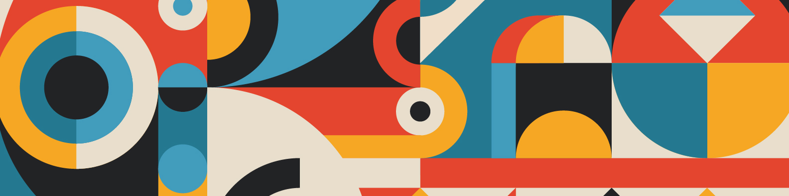

Laboratori 14-18 anni
Mente Adolescente: l'arte di prendersi cura di sé.
Un percorso psico-educativo a cadenza mensile per dare parole, strumenti e spazio alle emozioni, ai pensieri e alla crescita personale.
Richiedi informazioni
Il progetto
Mente Adolescente nasce per aiutare ragazze e ragazzi a comprendere meglio il proprio mondo interiore. Gli incontri offrono uno spazio sicuro per sperimentare, confrontarsi e allenare consapevolezza emotiva, relazione con sé e relazione con gli altri.
Obiettivi del percorso
- Riconoscere e nominare emozioni, pensieri e comportamenti.
- Sviluppare strumenti per gestire emozioni intense e momenti difficili.
- Aumentare la capacità di osservare prospettive diverse dalla propria.
- Coltivare consapevolezza, auto-osservazione e cura di sé.
Programma di lavoro
Il percorso prevede un incontro conoscitivo e cinque incontri tematici. Le aree principali riguardano mente e pensieri, rabbia, paura, dolore e piacere, con momenti di respirazione, confronto guidato, strumenti pratici e materiali di supporto.